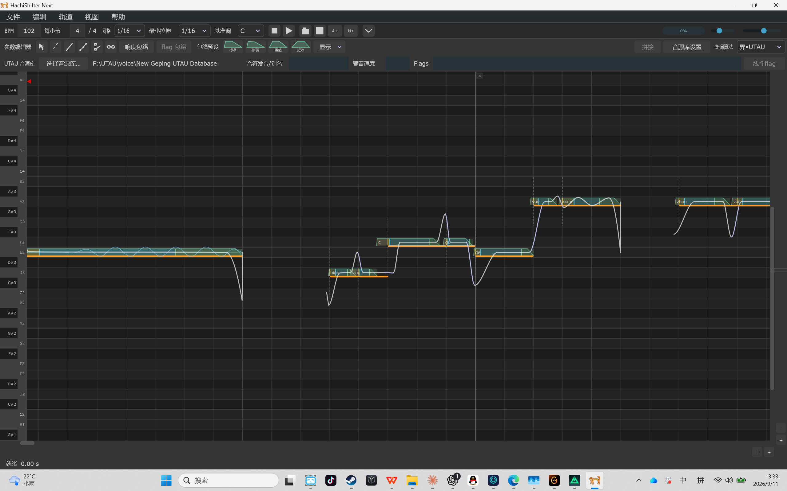

01 / PITCH细调每个音符
看得见的音高编辑
查看原始音高曲线，通过拖动音符、点控曲线，逐步调整演唱的细节。
什么，不在音符上画音高，你们同意吗？我不同意！来，接电话来。
歌声合成 · 鬼畜制作。
在直观的钢琴卷帘中编辑音高、调整参数。
结合直接的素材编辑与拼接式音源合成，
打磨属于你的音乐与鬼畜作品。

音高编辑 / 节奏调整 / 多轨编排 / 音源合成
调音怎可冒迭行事？
不再被有些过时的软件拖后腿，
把注意力留给歌声本身。
查看原始音高曲线，通过拖动音符、点控曲线，逐步调整演唱的细节。
允许直接使用声音素材进行编辑，完成一些常规歌声合成软件做不到的事。
导入 MIDI，选择音源库与多种调音模式，实现强于传统UTAU的调音方式
在同一工程中融合多种调音方式，在多轨中试听完整作品。
拼接式歌声合成
可使用绝大部分 UTAU 引擎，达成类似于经典 UTAU 的调音方式。
昆山采蓝玉，裂石穿云，不若此间曲响。
支持全新引擎 WCSNDM。在传统 UTAU 的基础上，将源音设定精细化，允许将一个音的结构分为四段并且自由调整，减少大部分单音音源的拆音工程量。
夫金石丝竹之音，发自器而通于天。
支持全新引擎 WCSNDM。在界 UTAU 的基础上，进一步细化源音设定相关内容，适合结构更加复杂的拼接式音源。
HACHISHIFTER NEXT
下载适合你系统的桌面版本，
在自己的创作节奏里，慢慢打磨。
完整解压后，运行文件夹中的 HachiShifter Next.exe。